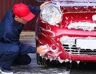

Anterior: Siguiente:
Menú:
Experiencia Laboral.
En mi experiencia laborar, es
hasta apenas hace un año el cual me vi en la nececiadad de
trabajar para ayuar a mi familia ya que papá sufrio de una
enfermedad muy grave la cual casi pierde la vida, estaba en proceso en
hacer el examen de admición a la prepa y era el inicio de la
pandemia de hoy en dia llamada Covid-19.
Debido a la crisis economica que estaba pasando mi familia estudiaba la secundaria y trabajaba.
llege a trabajar:


 Esas so mis experiencias laborales fueron por una gran necesidad.
Esas so mis experiencias laborales fueron por una gran necesidad.
Debido a la crisis economica que estaba pasando mi familia estudiaba la secundaria y trabajaba.
llege a trabajar:
- En un restaurante: atendiendo a las personas, mesereando, muy pocas veces cosinando, y cobrando.
- En un auto lavado: lavando motos, abriendo y cerrando el local, y cobrando.

- En una verduleria: acomoando la fruta o la verdura, atendiendo a las personas y de igual forma cobrando.
- En una hojalateria: Arreglando los cacarones de carros, pintando, y llevando o trallendo material.
- De Rappi: con mis tios me iba en las motos a repartir comida con la aplicación Rappi y DiDi Food.
- En una tienda: Cobrando.